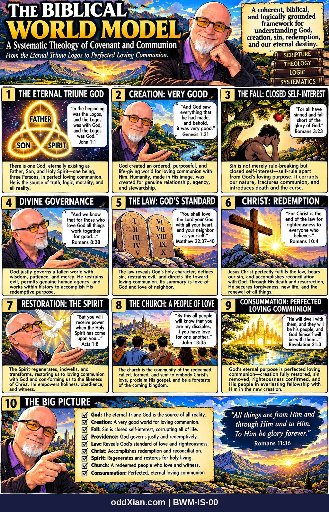
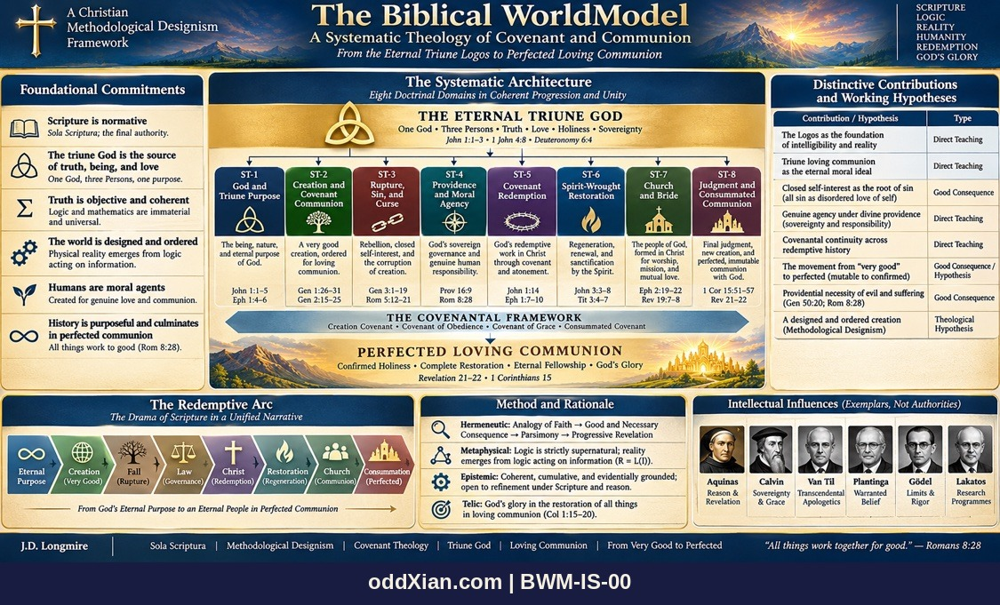

BWM-IS-00 · The Biblical World Model: Frontispiece and Architecture


The frontispiece of the series: the whole Biblical World Model on one plate, with its systematic architecture. Panel 3 states the series thesis that sin is closed self-interest; in the architecture plate that thesis is classified as a Good Consequence, and the claim registers of the series carry it at that grade.